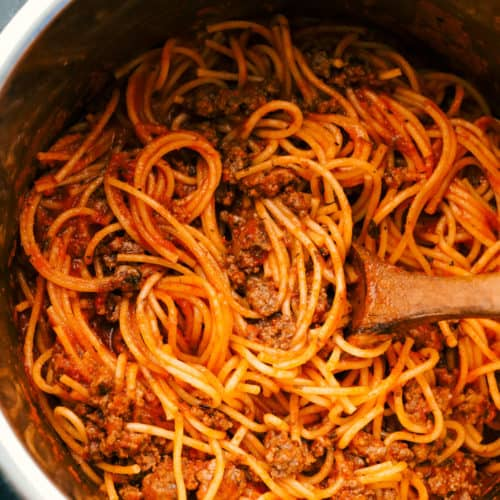

Home
Mom's Spaghetti

Description
This spaghetti recipes reminds me of home is all the best ways.
Mom, food, and heartburn. Follow this recipe and you'll be coughing
up the most delicious acid one could have.
Ingredients
- 1 stick of butter
- 1 small pack of straight noodles
- 1 can Preggo with meat
Steps!
- Bring water to a boil in a medium pot.
- Add noodles to water.
- When noodles are limp and stick drain water.
- Add butter and mix til you cant see.
- Add red sauce with meat.
- ENJOY!